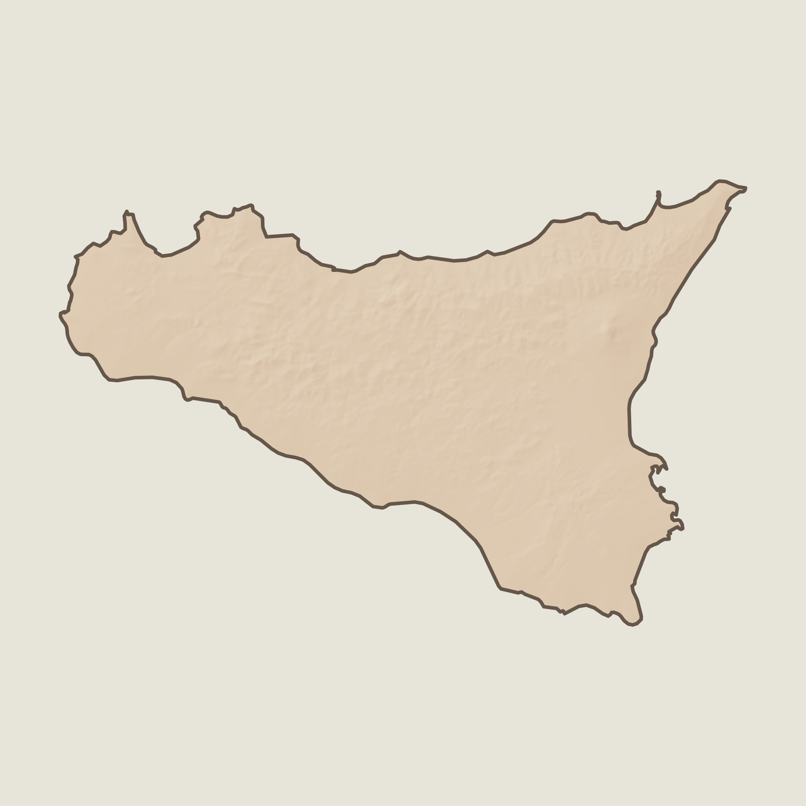
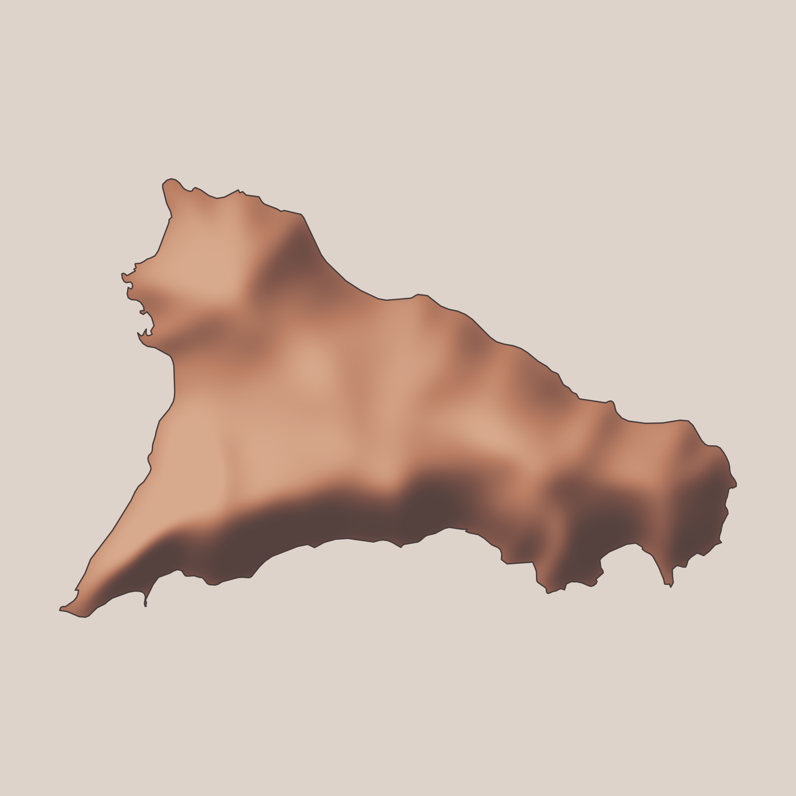

North-Up · Mediterranean Limestone

Geografische Küstenlinie aus Natural Earth · noch nicht visuell geprüft · kein Höhenrelief, keine NFT-Freigabe.



Soft Stone v3.8 · experimental drafts; generation may still be running
Geografische Küste und echtes Höhenmodell einschließlich Ätna. Nicht gemintet; keine Freigabe für den Verkauf.
Zur ISLANDS-App